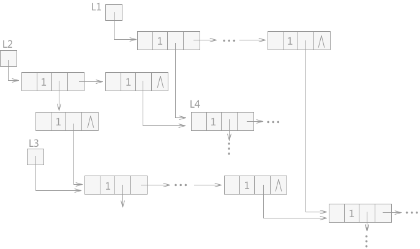
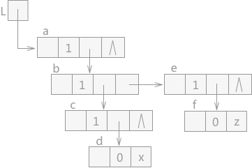
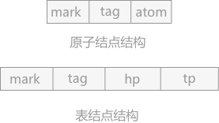
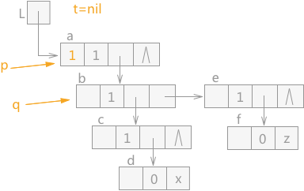
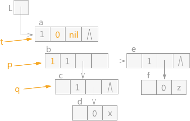
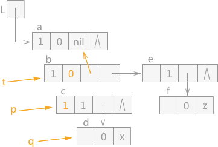
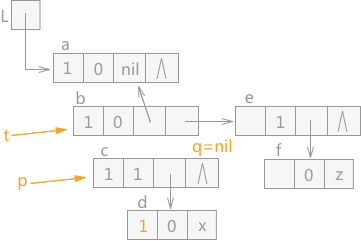
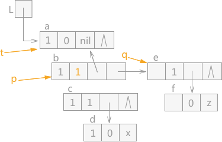
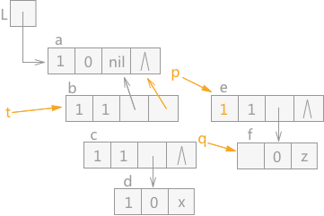
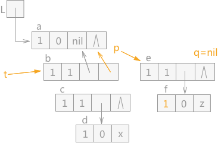

无用单元收集（垃圾回收机制）
通过前几节对可利用空间表进行动态存储管理的介绍，运行机制可以概括为：当用户发出申请空间的请求后，系统向用户分配内存；用户运行结束释放存储空间后，系统回收内存。这两部操作都是在用户给出明确的指令后，系统对存储空间进行有效地分配和回收。
但是在实际使用过程中，有时会因为用户申请了空间，但是在使用完成后没有向系统发出释放的指令，导致存储空间既没有被使用也没有被回收，变为了无用单元或者会产生悬挂访问的问题。
什么是无用单元？简单来讲，无用单元是一块用户不再使用，但是系统无法回收的存储空间。例如在C语言中，用户可以通过 malloc 和 free 两个功能函数来动态申请和释放存储空间。当用户使用 malloc 申请的空间使用完成后，没有使用 free 函数进行释放，那么该空间就会成为无用单元。
悬挂访问也很好理解：假设使用 malloc 申请了一块存储空间，有多个指针同时指向这块空间，当其中一个指针完成使命后，私自将该存储空间使用 free 释放掉，导致其他指针处于悬空状态，如果释放掉的空间被再分配后，再通过之前的指针访问，就会造成错误。数据结构中称这种访问为悬挂访问。
在含有共享子表的广义表中，也可能会产生无用单元。例如图 1 中，L1、L2 和 L3 分别为三个广义表的表头指针，L4 为 L1 和 L2 所共享，L3 是 L2 的子表，L5 为 L1、L2 和 L3 三个广义表所共享。
在图 1 的基础上，假设表 L1 不再使用，而 L2 和 L3 还在使用，若释放表 L1，L1 中的所有结点所占的存储空间都会被释放掉，L2 和 L3 中由于同样包含 L1 中的结点，两个表会被破坏，某些指针会产生悬挂访问的错误；
而如果 L1 表使用完成后不及时释放，L1 中独自占用的结点由于未被释放，系统也不会回收，就会成为无用单元。
解决存储空间可能成为无用单元或者产生悬挂访问的方法有两个：
如果想使用第二种方式，可以分为两步进行：
对正在被占用的存储空间进行标记的方法有三种：
递归和非递归方式在前面章节做过详细介绍，第三种实现方式中代替栈的方法是：添加三个指针，p 指针指向当前遍历的结点，t 指针永远指向 p 的父结点，q 指向 p 结点的表头或者表尾结点。在遍历过程遵循以下原则：
当 q 指针指向 p 的表头结点时，可能出现 3 种情况：
当 q 指针指向 p 的表尾结点时，可能出现 2 种情况：
例如，图 2 中为一个待遍历的广义表，其中每个结点的结构如图 3 所示：
在遍历如图 2 中的广义表时，从广义表的 a 结点开始，则 p 指针指向结点 a，同时 a 结点中 mark 域设置为 1，表示已经遍历过，t 指针为 nil，q 指针指向 a 结点的表头结点，初始状态如图 4 所示：
由于 q 指针指向的结点 b 的 tag 值为 1，表示该结点为表结构，所以此时 p 指向 q，q 指向结点 c，同时 t 指针下移，在 t 指针指向结点 a 之前，a 结点中的 hp 域指向 t，同时 a 结点中 tag 值设为 0。效果如图 5 所示：
通过 q 指针指向的结点 d 的 tag=0，所以，该结点为原子结点，此时根据遵循的原则，只需要将 q 指针指向的结点 d 的 mark 域标记为 1，然后让 q 指针直接指向 p 指针指向结点的表尾结点，效果图如图 7 所示：
由于 q 指针指向的结点 f 为原子结点，所以直接 q 指针的 mark 域设为 1 后，直接令 q 指针指向 p 指针指向的 e 结点的表尾结点。效果如图 10 所示：
但是在实际使用过程中，有时会因为用户申请了空间，但是在使用完成后没有向系统发出释放的指令，导致存储空间既没有被使用也没有被回收，变为了无用单元或者会产生悬挂访问的问题。
什么是无用单元？简单来讲，无用单元是一块用户不再使用，但是系统无法回收的存储空间。例如在C语言中，用户可以通过 malloc 和 free 两个功能函数来动态申请和释放存储空间。当用户使用 malloc 申请的空间使用完成后，没有使用 free 函数进行释放，那么该空间就会成为无用单元。
悬挂访问也很好理解：假设使用 malloc 申请了一块存储空间，有多个指针同时指向这块空间，当其中一个指针完成使命后，私自将该存储空间使用 free 释放掉，导致其他指针处于悬空状态，如果释放掉的空间被再分配后，再通过之前的指针访问，就会造成错误。数据结构中称这种访问为悬挂访问。

图 1 含有共享子表的广义表
图 1 含有共享子表的广义表
在含有共享子表的广义表中，也可能会产生无用单元。例如图 1 中，L1、L2 和 L3 分别为三个广义表的表头指针，L4 为 L1 和 L2 所共享，L3 是 L2 的子表，L5 为 L1、L2 和 L3 三个广义表所共享。
在图 1 的基础上，假设表 L1 不再使用，而 L2 和 L3 还在使用，若释放表 L1，L1 中的所有结点所占的存储空间都会被释放掉，L2 和 L3 中由于同样包含 L1 中的结点，两个表会被破坏，某些指针会产生悬挂访问的错误；
而如果 L1 表使用完成后不及时释放，L1 中独自占用的结点由于未被释放，系统也不会回收，就会成为无用单元。
解决存储空间可能成为无用单元或者产生悬挂访问的方法有两个：
- 每个申请的存储空间设置一个计数域，这个计数域记录的是指向该存储空间的指针数目，只有当计数域的值为 0 时，该存储空间才会被释放。
- 在程序运行时，所有的存储空间无论是处于使用还是空闲的状态，一律不回收，当系统中的可利用空间表为空时，将程序中断，对当前不在使用状态的存储空间一律回收，全部链接成一个新的可利用空间表后，程序继续执行。
第二种方法中，在程序运行过程中很难找出此时哪些存储空间是空闲的。解决这个问题的办法是：找当前正在被占用的存储空间，只需要从当前正在工作的指针变量出发依次遍历，就可以找到当前正在被占用的存储空间，剩余的自然就是此时处于空闲状态的存储空间。第一种方法非常简单，下面主要介绍第二种方法的具体实现。
如果想使用第二种方式，可以分为两步进行：
- 对所有当前正在使用的存储空间加上被占用的标记（对于广义表来说，可以在每个结点结构的基础上，添加一个 mark 的标志域。在初始状态下，所有的存储空间全部标志为 0，被占用时标记为 1）；
- 依次遍历所有的存储空间，将所有标记为 0 的存储空间链接成一个新的可利用空间表。
对正在被占用的存储空间进行标记的方法有三种：
- 从当前正在工作的指针变量开始，采用递归算法依次将所有表中的存储结点中的标志域全部设置为 1；
- 第一种方法中使用递归算法实现的遍历。而递归底层使用的栈的存储结构，所以也可以直接使用栈的方式进行遍历；
- 以上两种方法都是使用栈结构来记录遍历时指针所走的路径，便于在后期可以沿原路返回。所以第三种方式就是使用其他的方法代替栈的作用。
递归和非递归方式在前面章节做过详细介绍，第三种实现方式中代替栈的方法是：添加三个指针，p 指针指向当前遍历的结点，t 指针永远指向 p 的父结点，q 指向 p 结点的表头或者表尾结点。在遍历过程遵循以下原则：
当 q 指针指向 p 的表头结点时，可能出现 3 种情况：
- p 结点的表头结点只是一个元素结点，没有表头或者表尾，这时只需要对该表头结点打上标记后即 q 指向 p 的表尾；
- p 结点的表头结点是空表或者是已经做过标记的子表，这时直接令 q 指针指向 p 结点的表尾即可；
- p 结点的表头是未添加标记的子表，这时就需要遍历子表，令 p 指向 q，q 指向 q 的表头结点。同时 t 指针相应地往下移动，但是在移动之前需要记录 t 指针的移动轨迹。记录的方法就是令 p 结点的 hp 域指向 t，同时设置 tag 值为 0。
当 q 指针指向 p 的表尾结点时，可能出现 2 种情况：
- p 指针的表尾是未加标记的子表，就需要遍历该子表，和之前的类似，令 p 指针和 t 指针做相应的移动，在移动之前记录 t 指针的移动路径，方法是：用 p 结点的 tp 域指向 t 结点，然后在 t 指向 p，p 指向 q。
- p 指针的表尾如果是空表或者已经做过标记的结点，这时 p 结点和 t 结点都回退到上一个位置。
由于 t 结点的回退路径分别记录在结点的 hp 域或者 tp 域中，在回退时需要根据 tag 的值来判断：如果 tag 值为 0 ，t 结点通过指向自身 hp 域的结点进行回退；反之，t 结点通过指向其 tp 域的结点进行回退。

图 2 待遍历的广义表
图 2 待遍历的广义表
例如，图 2 中为一个待遍历的广义表，其中每个结点的结构如图 3 所示：

图 3 广义表中各结点的结构
图 3 广义表中各结点的结构
在遍历如图 2 中的广义表时，从广义表的 a 结点开始，则 p 指针指向结点 a，同时 a 结点中 mark 域设置为 1，表示已经遍历过，t 指针为 nil，q 指针指向 a 结点的表头结点，初始状态如图 4 所示：

图 4 遍历广义表的初始状态
图 4 遍历广义表的初始状态
由于 q 指针指向的结点 b 的 tag 值为 1，表示该结点为表结构，所以此时 p 指向 q，q 指向结点 c，同时 t 指针下移，在 t 指针指向结点 a 之前，a 结点中的 hp 域指向 t，同时 a 结点中 tag 值设为 0。效果如图 5 所示：

图 5 遍历广义表（2）
通过 q 指针指向的结点 c 的 tag=1，判断该结点为表结点，同样 p 指针指向 c，q 指针指向 d，同时 t 指针继续下移，在 t 指针指向 结点 b 之前，b 结点的 tag 值更改为 0，同时 hp 域指向结点 a，效果图如图 6 所示：图 5 遍历广义表（2）

图 6 遍历广义表（3）
图 6 遍历广义表（3）
通过 q 指针指向的结点 d 的 tag=0，所以，该结点为原子结点，此时根据遵循的原则，只需要将 q 指针指向的结点 d 的 mark 域标记为 1，然后让 q 指针直接指向 p 指针指向结点的表尾结点，效果图如图 7 所示：

图 7 遍历广义表（4）
当 q 指针指向 p 指针的表尾结点时，同时 q 指针为空，这种情况的下一步操作为 p 指针和 t 指针全部上移动，即 p 指针指向结点 b，同时 t 指针根据 b 结点的 hp 域回退到结点 a。同时由于结点 b 的tag 值为 0，证明之前遍历的是表头，所以还需要遍历 b 结点的表尾结点，同时将结点 b 的 tag 值改为 1。效果图如图 8 所示：图 7 遍历广义表（4）

图 8 遍历广义表（5）
由于 q 指针指向的 e 结点为表结点，根据 q 指针指向的 e 结点是 p 指针指向的 b 结点的表尾结点，所以所做的操作为：p 指针和 t 指针在下移之前，令 p 指针指向的结点 b 的 tp 域指向结点 a，然后给 t 赋值 p，p 赋值 q。q 指向 q 的表头结点 f。效果如图 9 所示：图 8 遍历广义表（5）

图 9 遍历广义表（6）
图 9 遍历广义表（6）
由于 q 指针指向的结点 f 为原子结点，所以直接 q 指针的 mark 域设为 1 后，直接令 q 指针指向 p 指针指向的 e 结点的表尾结点。效果如图 10 所示：

图 10 遍历广义表（7）
由于 p 指针指向的 e 结点的表尾结点为空，所以 p 指针和 t 指针都回退。由于 p 指针指向的结点 b 的 tag 值为 1，表明表尾已经遍历完成，所以 t 指针和 p 指针继续上移，最终遍历完成。
图 10 遍历广义表（7）
总结
无用单元的收集可以采用以上 3 中算法中任何一种。无论使用哪种算法，无用单元收集本身都是很费时间的，所以无用单元的收集不适用于实时处理的情况中使用。关注公众号「站长严长生」，在手机上阅读所有教程，随时随地都能学习。内含一款搜索神器，免费下载全网书籍和视频。

微信扫码关注公众号